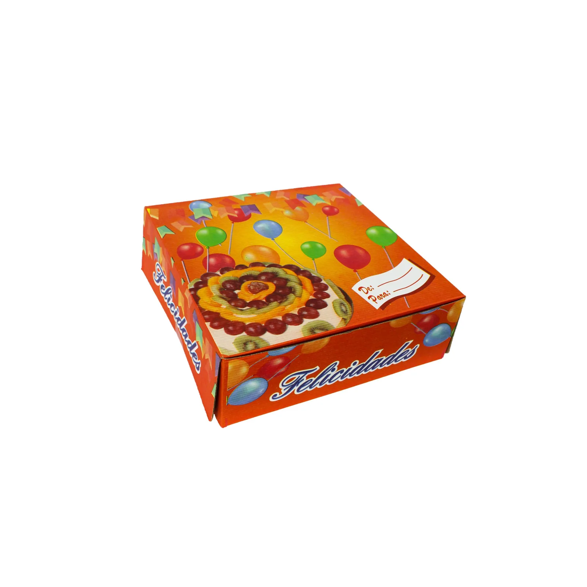
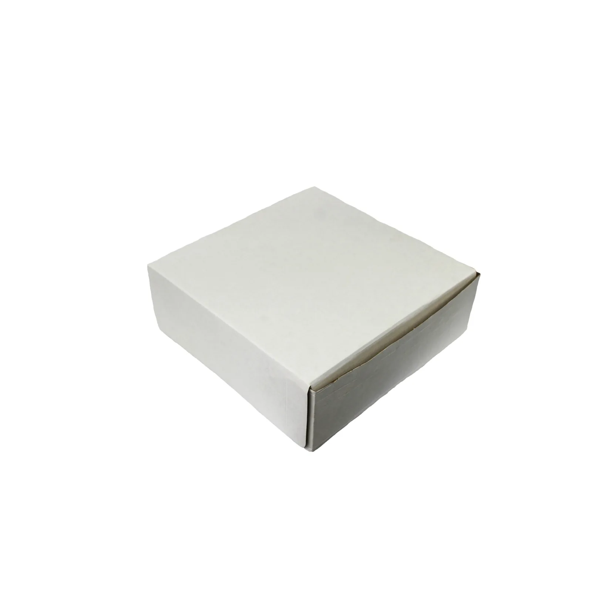
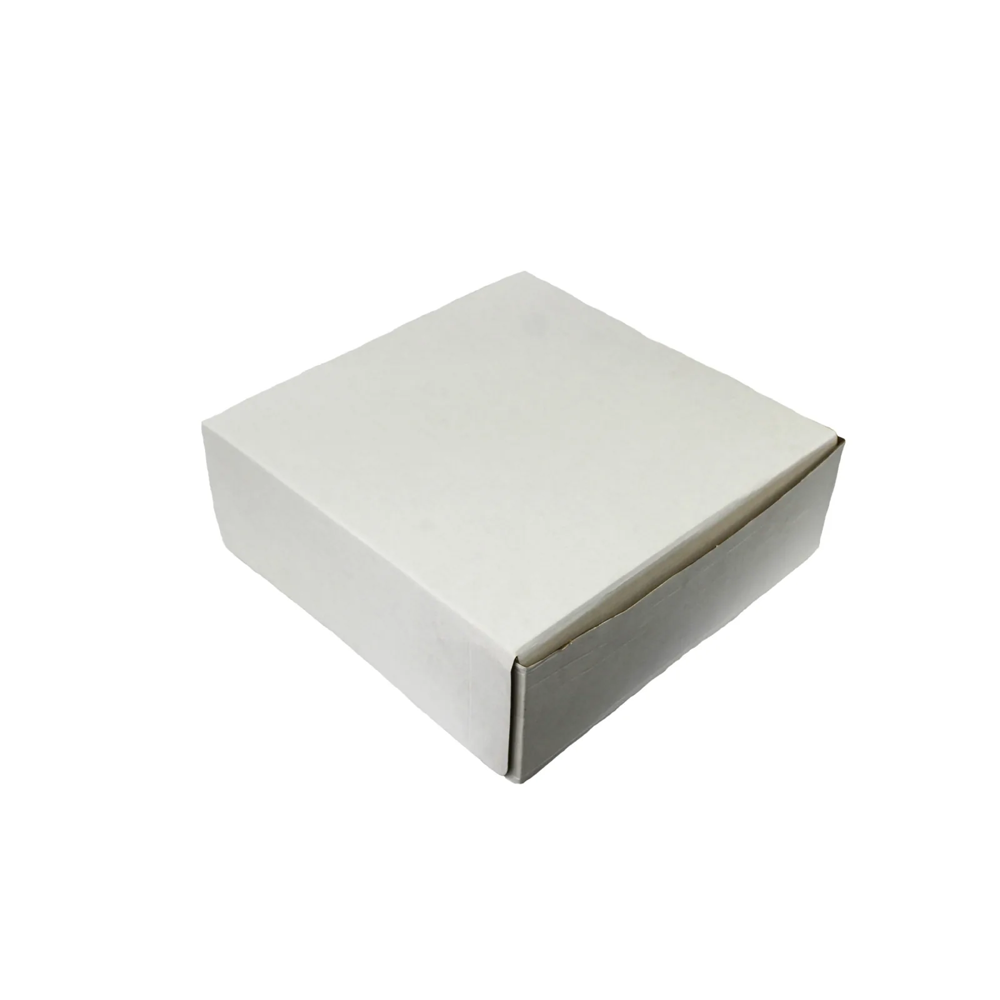

01
Referencia de catálogo
Caja pastel 10 × 10 × 4 Felicidades
Referencia publicada con presentación 1/50; confirmar medidas y unidades al cotizar.

Imagen publicada por SuccasaCajas para pastel y empaques de alimentos. Calcula presentaciones completas antes de pedir una cotización.
Guarda tus referencias en una lista local y prepara el siguiente paso. Precios, variantes y existencias se revisan en cada ficha oficial.
Referencia publicada con presentación 1/50; confirmar medidas y unidades al cotizar.

Caja blanca publicada con presentación 1/50.

Caja blanca de otra medida, publicada con presentación 1/50.
Catálogo de cajas, bandejas y otros empaques para alimentos; permite agregar referencias y cantidades a una cotización digital.
Prueba cantidades y condiciones. Obtén un resumen local para revisar antes de hablar con la empresa.
Datos revisados el 3 de noviembre de 2026. La empresa confirma cualquier condición vigente.
Referencia publicada con presentación 1/50; confirmar medidas y unidades al cotizar.
Caja blanca publicada con presentación 1/50.
Caja blanca de otra medida, publicada con presentación 1/50.
El catálogo se presenta como mayoreo de empaques para alimentos.
La web permite agregar productos y cantidades a una solicitud digital.
El catálogo incluye cajas de pizza, lienzos antigrasa, moldes y papel aluminio.
La página de cotización publica ubicación en Mixco, Guatemala.
No. La solicitud oficial debe confirmar presentación, medidas, existencias y precio final.